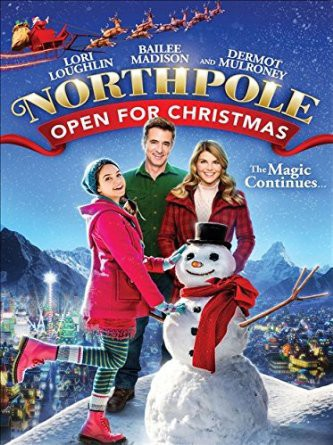

#7371 Northpole: Weihnachten geöffnet
Alternativ: Northpole: Open for Christmas
 
 IMDB-Wertung: 6.6 / 10
IMDB-Wertung: 6.6 / 10  Metascore: 0
Metascore: 0 
A successful businesswoman, Mackenzie, inherits her beloved aunt's inn, and chooses to restore the hotel to its original grandeur only to sell it right before Christmas. Unbeknownst to Mackenzie, she receives some unexpected help from a team of elves headed by the cheerful Clementine, who helps Mackenzie rediscover the true meaning of Christmas.
Jahr: 2015
Dauer: 86 Minuten
FSK: 0
Land: USA Studio: Hallmark Channel, TheTonspuren: DTS - ,
Untertitel: Deutsch,
Auflösung: 1080p (1920x1080) Größe: 6205 MB
Genre: Fantasy, Weihnachten
Regisseur: Douglas Barr
Drehbuch: Gregg Rossen
Soundtrack:
Darsteller:
Datei: X:\2015(N-Z)\Northpole Weihnachten geöffnet (2015, FSK0, 1920x1080).mkv seit 20.10.2017
Festplatte: HD 2015(A-Z)
 Es gibt insgesamt 161 Filme in der Gruppe '2015(N-Z)'
Es gibt insgesamt 161 Filme in der Gruppe '2015(N-Z)'